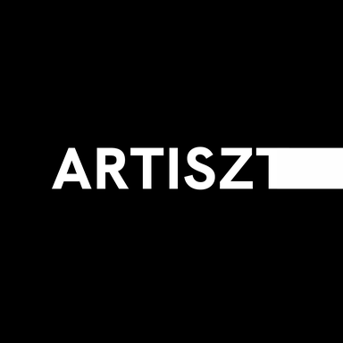
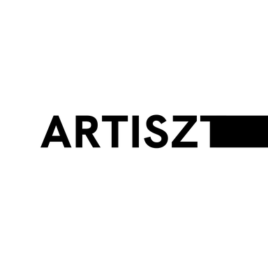

Artiszt
UI/UX design, graphic design, and motion design - all in one place.
Browse the portfolio by category.
Drag or swipe through each set, and tap a piece to see it full size. New work is added as projects are completed.
UI/UX Designs
Cover Art Designs
Thumbnails
Posters
Use the left and right arrow keys to move between pieces, and Enter to open the one in front at full size.
Priced by the project, not the hour.
Every project starts with a short call to figure out what it actually needs - these ranges cover most of what that turns into.
Rates are in US dollars with no VAT added, and vary with scope, revisions, and turnaround. Get in touch with a brief and you'll have a real number within a day or two. UI/UX projects start with a draft prototype, so you can see the direction before you commit.
The approach behind the work.


I'm a graphic, motion, and UI/UX designer based in Lithuania, working with brands across the US, musicians, labels and YouTubers. Six years of hands-on work in Figma, Photoshop, After Effects, and Sony Vegas show up in everything from UI/UX design to cover art, thumbnails, posters, and animated logos.
I have a genuine passion for this work, and I love collaborating on bigger projects that call for close communication and teamwork. That said, I'm just as comfortable handling a project solo from start to finish - either way, my main goal is making sure the client gets exactly what they're looking for.
Expect quick turnarounds and direct communication over a long back-and-forth. Most projects start from a rough reference or a one-line brief and get refined together from there - and if something isn't working, I'll say so and fix it rather than just deliver what was asked for.
Reach out directly, any time.
Prefer email or DMs over a form? Here's every direct way to get in touch.
Tell me what you're working on.
Reply time is usually within a day or two, with next steps and a rough quote.